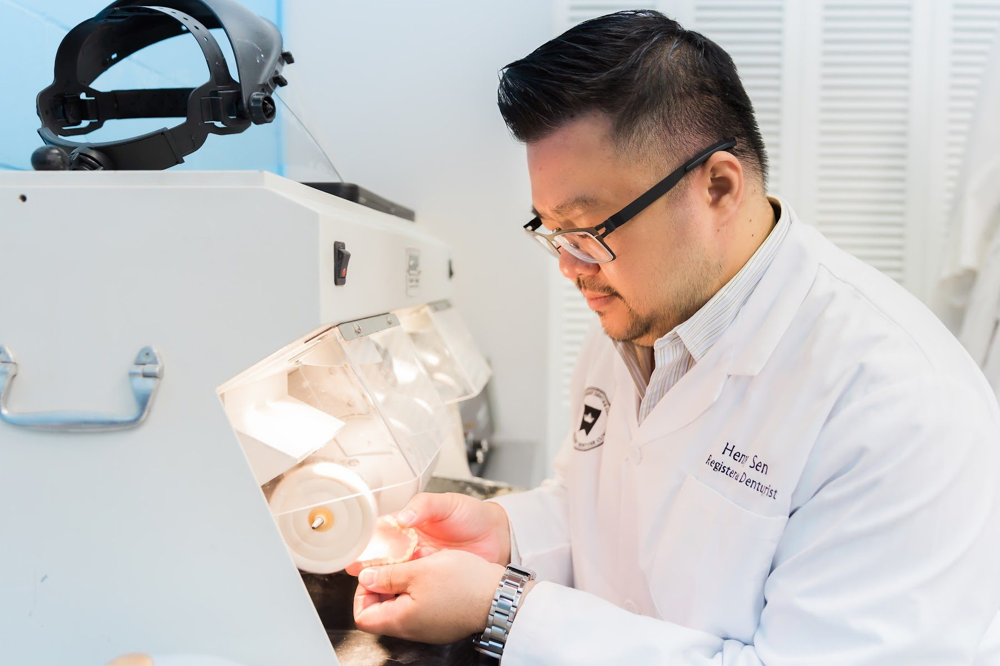
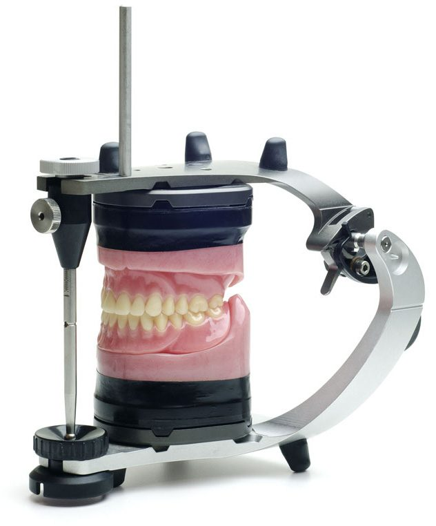
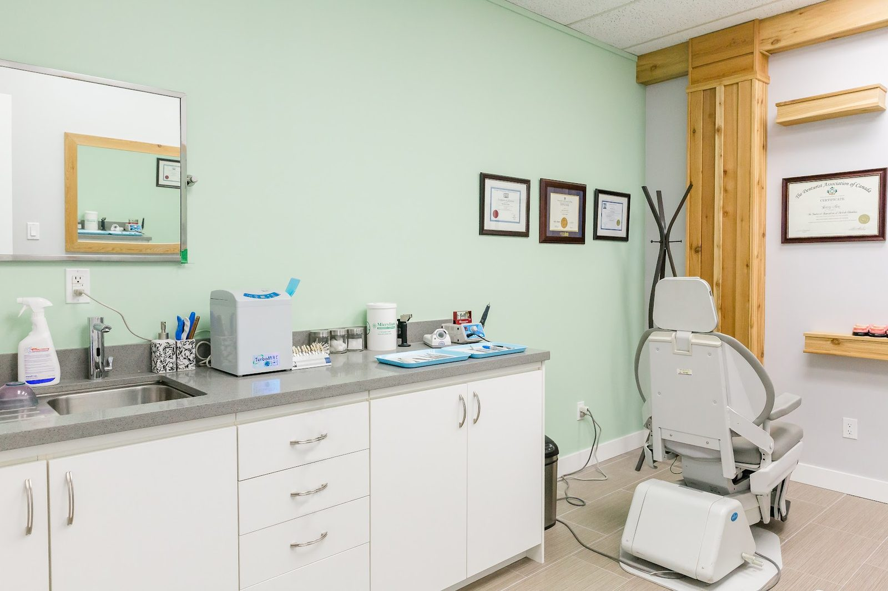
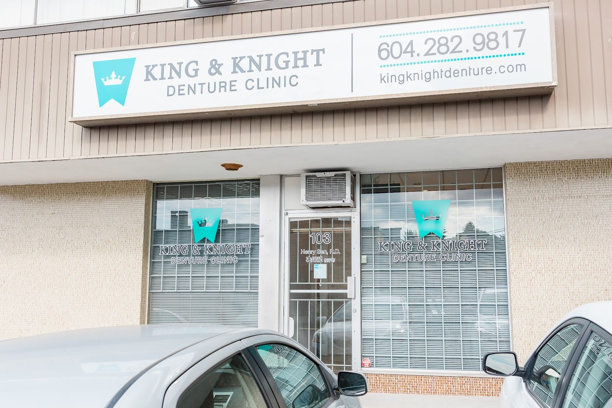

Denture clinic · Kingsway, East Vancouver
Dentures you choose.
- Tooth colour
- Size
- Position
Henry Sen, Registered Denturist, with an in-house lab. One-day relines, repairs while you wait, and a 4.9★ rating from 48 Google reviews.
Mon–Fri 10–5 · Sat by appointment · Free parking

4.9★48 Google reviews
1 dayrelines, 10 am to 4 pm
While you waitmost repairs
5 yearsfree adjustments on BPS dentures
Step-freewheelchair access, free parking
What brings you in?
Pick the closest one. We'll tell you what usually happens next.
Services
Everything made and fitted here
Dentures are made in our own lab, a few steps from the chair. Prices depend on what you choose, so call for a quote.
New dentures, start to finish
You see them before they're finished
- ConsultationWe look at your mouth, talk through the options and what fits your budget.
- Impressions and biteAccurate impressions and bite records, taken here.
- Try-in: you decideYou choose tooth colour, size and position, and see the set at the try-in. Not happy with the look? We stop, and there's no charge.
- FittingYour finished dentures, made in our lab and fitted by Henry.
- AdjustmentsSore spot? Come back. BPS Premium dentures include free adjustments and cleaning for 5 years.

Our approach
Nothing you don't need
Our clinic is about choices. Most of the time it's better to have a partial denture you can afford than no partial at all, so we lay out every option, from cast partials to acrylic and flexible ones.
When we send a patient for implants, we say how many are needed and no more. Usually two in the lower jaw is enough, so why pay for more?
We'll even try to rehabilitate old dentures to get a few more years out of them.
Your denturist
Henry Sen, B.A., R.D.
Henry graduated from Van Tech, then from Simon Fraser University with a Bachelor of Arts in 2006. He trained in the Denturist program at Vancouver Community College, went back to VCC as a lab demonstrator, and then opened King & Knight.
- Registered Denturist
- Certified by Ivoclar to provide BPS dentures
- Trained in the SEMCD suction denture technique under Dr. Jiro Abe

Reviews
4.9 on Google, 48 reviews
“Henry came in on stat holiday to take care of our needs. Very accommodating and patient from first appointment to subsequent follow up.”
Andy · dentures for mom
“He made around 5 trips to her care home for fittings. My grandmother really liked his kind and caring manner.”
Bernie · dentures for grandma
“My father Gary got some much needed dentures, the process was easy and simple. The owner Henry is fantastic.”
D. · dentures for dad
“A good professional to fix my teeth and I have paid a fair price for his service.”
Christina
Questions
Good to know
Can I get a reline done in one day?
Yes. Come in for impressions at 10:00 am and pick up your refitted denture at 4:00 pm. It needs an appointment, so call ahead.
How often should dentures be relined?
Every 2 years is recommended. The ridges that hold your dentures shrink over time, which is why dentures that once fit well start to feel loose.
My denture broke. Can you fix it today?
Most repairs, including broken teeth and cracked acrylic or metal, are done while you wait. Call first so we can fit you in.
What if I don't like how my new dentures look?
You choose tooth colour, size and position, and you see them at the try-in before they're finished. If we can't meet your expectations at that stage, we stop treatment and there's no charge.
Do I need implants for a lower denture that stays put?
Not always. The lower suction denture (SEMCD) holds with suction and needs no surgery, implants or adhesive. It works for about 4 out of 5 patients. Read more.
Are you open on Saturdays?
Saturdays are by appointment only. Weekdays we're open 10 am to 5 pm.
Visit
103 – 1435 Kingsway
Vancouver, BC V5N 2R6
Near Kingsway and Knight Street.
- Mon–Fri
- 10:00 am – 5:00 pm
- Saturday
- By appointment
- Sunday
- Closed
Free parking · Wheelchair accessible
